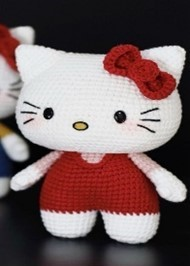
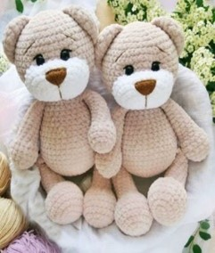
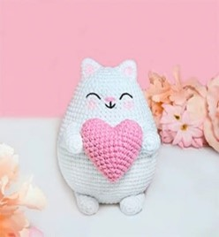
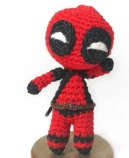

Tejiendo tu valor; un hilo de amor propio a la vez.
En que te ayuda el tejido en tu autoestima
Tejer fortalece la autoestima al ofrecer un sentido de logro, promover la paciencia y permitir la expresion creativa. Cada puntada es un paso hacia laautovaloración, donde el ritmo repetitivo calma la mente y refuerza la confianza en uno mismo. Crear algo con tus manos te recuerda que eres capaz valioso y llena de potencial.
Blog
-
¿Quienes somos?
Somos un equipo emprendedor de la I.E.P. Inmaculada Concepción , lo cual busca promover la autoconfianza en las personas , con ayuda de los tejidos (amigurumis )
-
¿Por qué somos un equipo?
Tenemos un objetivo compartido que busca motivar a las personas a través de los tejidos de amigurumis
Sobre nuestra aplicación
-
¿Cuál es nuestro objetivo de la aplicación?
Nuestro objetivo es fomentar la creatividad, la relajación y la autoexpresión. Que mejoran la confianza personal mientras los usuarios crean sus amigurumis.
-
¿Cuál es nuestro objetivo de la aplicación?
Nuestro objetivo es fomentar la creatividad, la relajación y la autoexpresión.Que mejoran la confianza personal mientras los usuarios crean sus amigurumis.
Lo que se viene más adelante...
-
Hello Kitty
 -
Ositos
 -
Gato
 -
Deadpool
 -
Hombre Araña